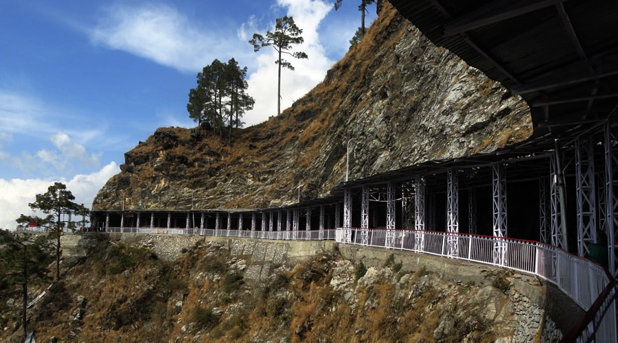

Jammu & Kashmir
Vaishno Devi: Mountain Mother
Embark on a profound journey of faith and endurance to the holy cave of Mata Vaishno Devi, nestled in the Trikuta Mountains. This is one of the most revered Tirthas in India, where the Divine Mother is worshipped in her primal, rock-manifested forms. The arduous trek to her abode is not a challenge, but an offering of devotion (*bhakti*) and austerity (*tapas*), a pilgrimage that tests the body to elevate the soul.
The Legend of the Divine Maiden
Legend holds that the Divine Mother was born as Vaishnavi, a supremely beautiful and powerful maiden. To fulfill her spiritual purpose, she renounced worldly comforts and undertook severe austerities in a cave in the Trikuta mountains. Her growing spiritual power attracted the attention of a tantric named Bhairon Nath, who pursued her. To escape him, the Goddess fled, creating springs and passages with her divine weapons. Finally, at the holy cave, she assumed her formidable form as Mahakali and beheaded Bhairon Nath, whose head landed on an adjacent peak. Realizing his folly, Bhairon Nath begged for forgiveness, and the merciful Mother granted him a boon that no pilgrimage to her shrine would be complete without a visit to his.
Key Spiritual Experiences
The Sacred Trek (Yatra): The 13-kilometer trek from the base town of Katra to the holy Bhawan is the heart of the pilgrimage. Every step taken while chanting "Jai Mata Di" is an act of devotion. The path is a test of will and faith, and completing it fills the pilgrim with a sense of immense accomplishment and grace.
Darshan of the Holy Pindis: Inside the sacred cave, the Goddess is not present in the form of an idol. Instead, she is worshipped as three natural rock formations known as *Pindis*. These represent her three forms: Mahakali (the power of dissolution), Mahalakshmi (the power of sustenance), and Mahasaraswati (the power of creation). The *darśana* of these sacred Pindis is a powerful, soul-stirring experience.
Visit to Bhairon Ghati: After the darshan at the holy cave, pilgrims must undertake a further, steeper trek to Bhairon Ghati to visit the temple of Bhairon Nath. This act fulfills the boon of the Goddess and is considered essential to completing the yatra and receiving its full blessings.